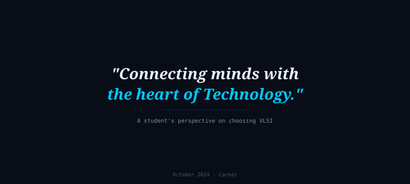
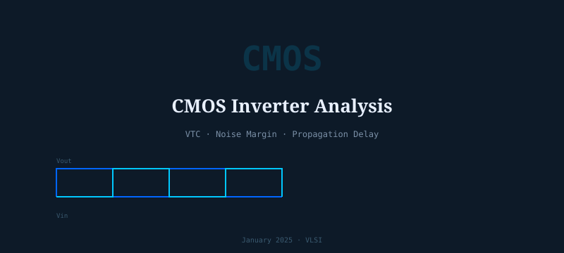

Exploring
Ideas.
Notes on VLSI verification, RTL design, processor architecture, and the science underneath it all — written from a curious engineer's perspective.
Foreseeable Future —
Knowns & Unknowns
A grounded, first-principles journey through semiconductor science — from crystal physics and band theory to the walls the industry is hitting today, and what comes next. No hype, no hand-waving. Just the science.
Start Reading — Post 1 →
Building Your First UVM Testbench from Scratch
A step-by-step walkthrough of UVM architecture — agents, sequencers, drivers, monitors, scoreboards and coverage collectors — illustrated with a simple ALU design.
Read More →RISC-V Pipeline Hazards: Detection, Forwarding & Stalls
A deep dive into data and control hazards in a 5-stage RISC-V pipeline — how forwarding paths reduce stalls and how branch prediction keeps the pipe flowing.
Read More →
Why I Chose VLSI Verification: A Fresh Graduate's Perspective
My journey from EEE at KLE Tech to chip verification training at Maven Silicon — the certifications, the turning points, and what finally made it all click.
Read More →
AMBA Protocols Explained: AXI, AHB & APB — When to Use Which
Breaking down the three core AMBA bus protocols, their transaction models, and how to choose the right one for your SoC interconnect.
Read More →
Achieving Coverage Closure: Strategies Beyond Random Simulation
How to analyse coverage reports, write targeted directed tests, use constraint solving, and apply coverage-driven verification to close stubborn holes efficiently.
Read More →
Static Timing Analysis Fundamentals Every RTL Engineer Should Know
Setup and hold times, clock skew, timing paths, and how STA tools flag violations — explained plainly for someone coming from RTL design.
Read More →